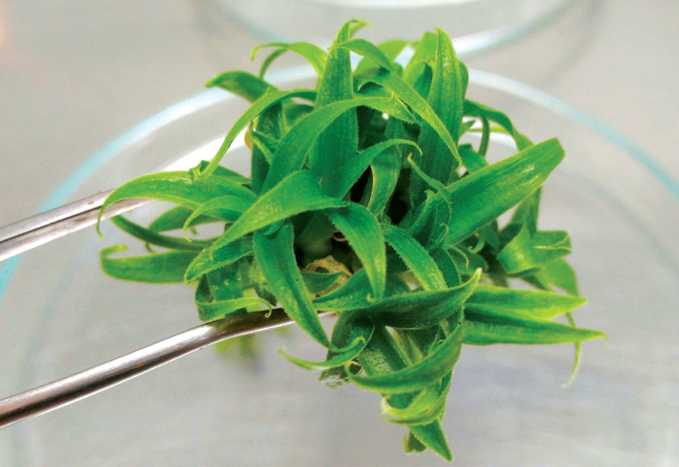

The learner will be able to
Perceive the concepts of tissue culture.
Cognize the steps of tissue culture techniques and its types.
Understand the protoplast culture in detail.
Elicit the list of secondary metabolites obtained through cell suspension culture.
Learn plant regeneration pathway.
Appreciate the uses of micro propagation, somatic hybridization, shoot meristem culture and germplasm conservation.
Acquire the knowledge of patenting Biosafety and Bioethics.